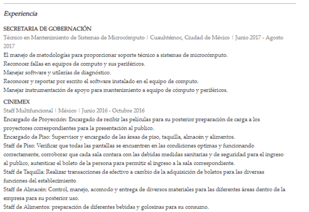

Daniel Arriola Hernandez
dani-hdz321@hotmail.com Edad 22
| Resumen Profesional |
|---|
| Tecnico en Mantenimiento de Sistemas de Microcomputo optimista y dinamico con un solido conocimiento en el area de mantenimiento correctivo y preventivo asi como el uso de distintos softwares para el mismo. Una persona motivada y con una gran capacidad de organizacion y priorizacion en cuanto a metas y objetivos, con gana de aquirir mas conocimientos en campos relacionados a la informatica y afines. |
| Aptitudes |
|---|
|
| Experiencia |
|---|
|  |
| Formacion Academica |
|---|


| Conocimientos |
|---|
|